(In de afbeelding hierboven is een battle te zien)
KaperKronieken is een 2D-spel waarin de speler het opneemt tegen vijanden in een gevechtssysteem dat
sterk lijkt op dat van een klassiek RPG spel. Dit project is ontwikkeld voor de opdracht reusable
components, waarbij herbruikbaarheid van code centraal stond. Zowel de vijanden als de speler maken
tijdens de gevechten gebruik van herbruikbare componenten.
Bij het ontwikkelen van dit spel heb ik geprobeerd te programmeren volgens het S.O.L.I.D.-principe, wat
zorgt voor een goed gestructureerde en uitbreidbare codebasis. Enkele voorbeelden van herbruikbare
componenten zijn: Health, TargetEntity, Shield.
Naast de gevechten is er ook een overworld waarin je vrij kunt rondlopen. Tijdens het verkennen kun je
vijanden tegenkomen. Zodra je in de buurt van een vijand komt, zal deze je opmerken en achter je aan
gaan. Word je gepakt? Dan beland je direct in een battle.
(In de afbeelding hieronder is de overworld te zien)
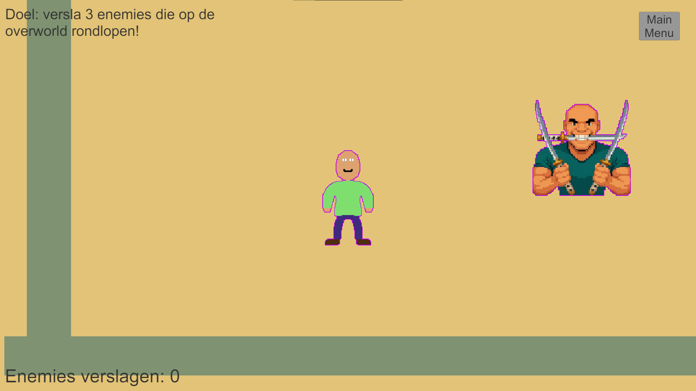
Code
Positie van spelers voor een battle
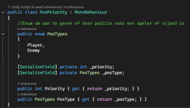
Bovenstaand script wordt op een leeg GameObject gezet. Daarna kun je in de Inspector aangeven welk type het is:
een spawn voor een speler of voor een enemy. Ook kun je aangeven hoe belangrijk die plek is met priority (zie afbeelding hieronder).
De speler heeft ook een int die BattlePriority heet.
Zo wordt de speler met de hoogste priority op de plek met de hoogste priority gezet.
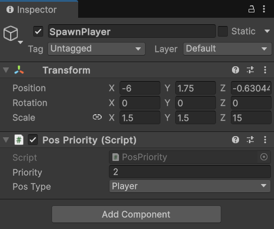
Het script hieronder sorteert de spawnposities en de entiteiten, en plaatst ze vervolgens op de juiste manier zodat ze op de correcte plek komen te staan.
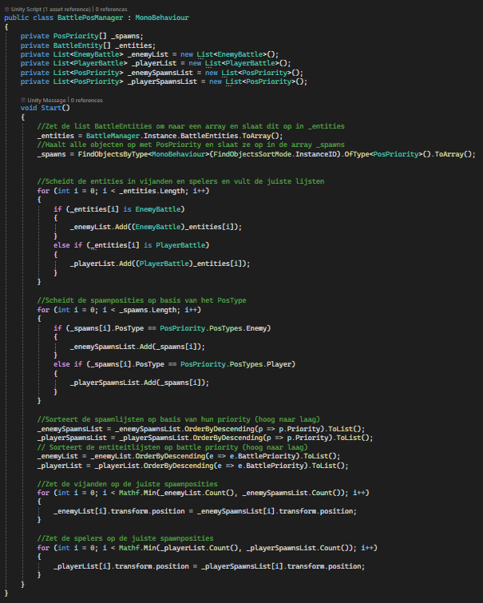
Herbruikbaar component voorbeeld
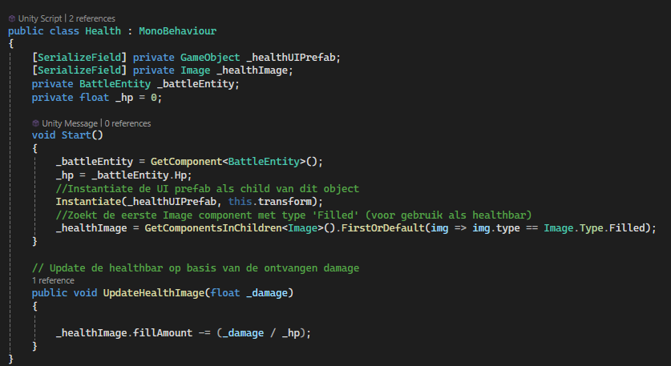
Het script hierboven is een voorbeeld van een component die vaker wordt hergebruikt. Het is een vrij simpel script,
eigenlijk is het enige wat het doet een healthbar instantiëren en daarna wordt hij gebruikt om de healthbar te updaten als de entiteit damage krijgt.
Dit piratenschip heb ik gemaakt voor een project op school.
We waren samen een piraten game aan het ontwikkelen en het was mijn taak om het schip te modelleren en textureren.
Ik heb eerst de vorm van het schip gemaakt en ben later verder gegaan met de binnenkant.
De gameplay van het spel speelde zich vooral af binnen het schip en niet zo zeer op het dek.
In Unity hebben wij interieur toegevoegd in het schip, zoals een kanon die ook op mijn pagina staat.
Omgeving
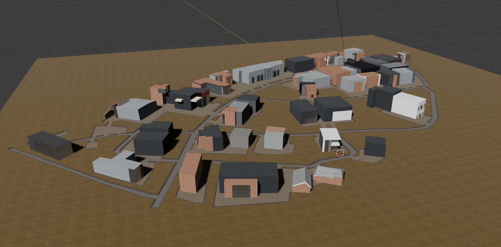
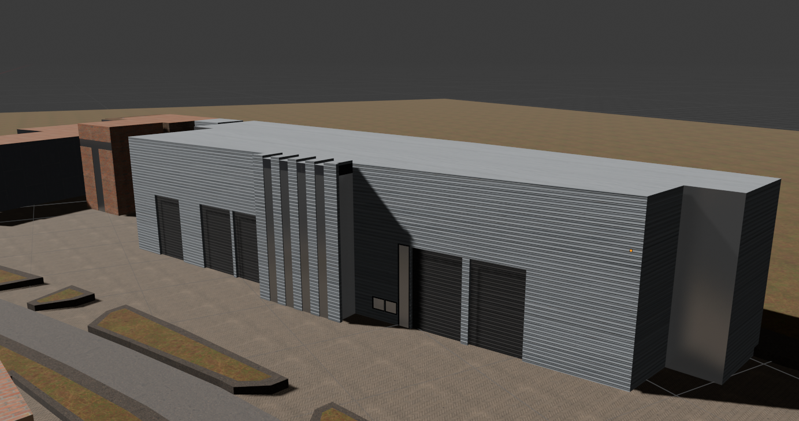
Voor een eerdere stage heb ik een omgeving nagebouwd die gebaseerd is op een echte locatie.
Het gebied dat ik na wilde maken is te zien in de afbeelding hieronder.
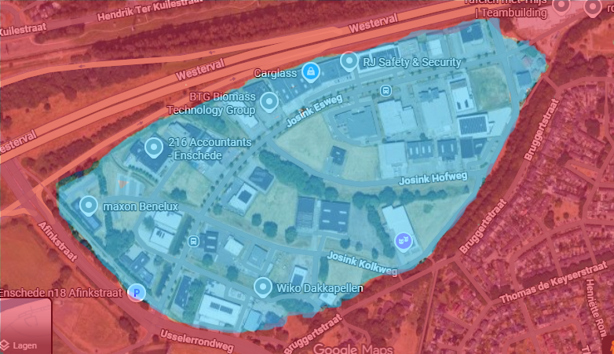
Skelet model
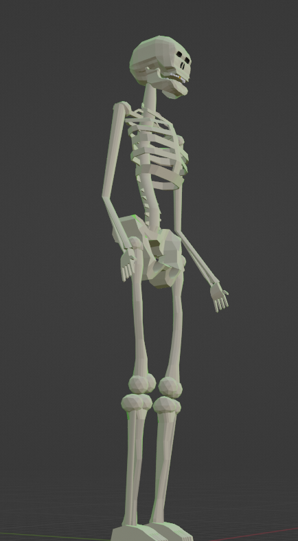
Dit skelet heb ik gemaakt voor een project in het 3de leerjaar.
Ik heb geprobeerd een skelet na te maken, daarna heb ik het volledig gerigged waardoor ik er een animatie bij kon maken
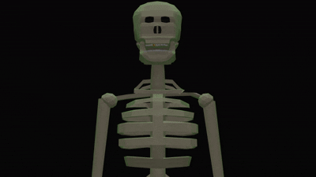
Kanon model
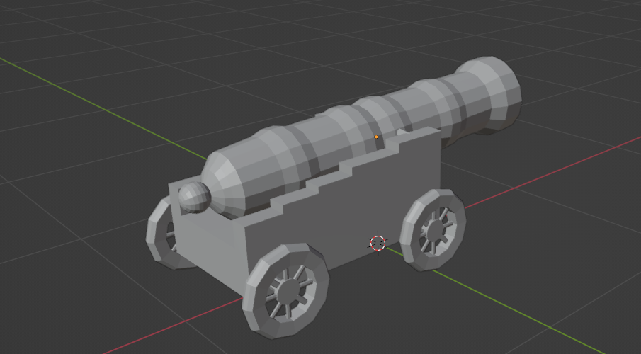
Dit kanon was onderdeel van het zelfde project als het schip. Dit kanon werd in het schip geplaatst en gebruikt in het spel.
Pokémon model namaken
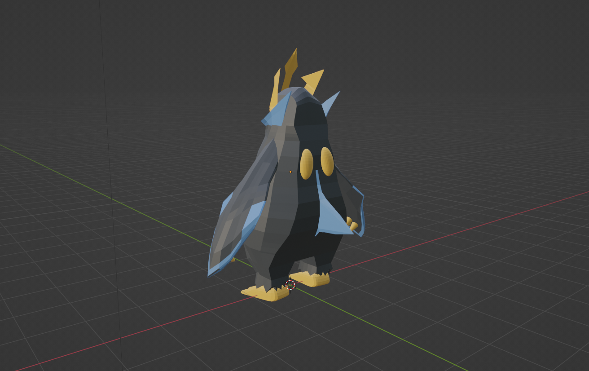
In leerjaar 2 kregen wij een opdracht om een personge na te maken, ik heb er toen voor gekozen om een Pokémon te modelleren.
Ik was terwijl we deze opdracht kregen al bezig met het leren van Blender bij het keuzedeel verdieping software,
dus ik had al wat ervaring met het programma. Ik heb er toen voor gekozen om een Pokémon na te maken namelijk de Pokémon Empoleon (hieronder te zien hoe die eruitziet).
Het is niet helemaal perfect geworden, vooral de textures omdat het gewoon simpele materialen zijn, maar ik ben er wel tevreden mee met de ervaring die ik toen had.